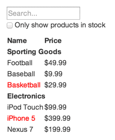

React is, in our opinion, the premier way to build big, fast Web apps with JavaScript.
It has scaled very well for us at Facebook and Instagram.
One of the many great parts of React is how it makes you think about apps as you build them. In this document, we'll
walk you through the thought process of building a searchable product data table using React.
Start With A Mock
Imagine that we already have a JSON API and a mock from our designer. The mock looks like this:

Our JSON API returns some data that looks like this:
Step 1: Break The UI Into A Component Hierarchy
The first thing you'll want to do is to draw boxes around every component (and subcomponent) in the mock and give them all names.
If you're working with a designer, they may have already done this, so go talk to them! Their Photoshop layer names may end up being
the names of your React components!
But how do you know what should be its own component? Just use the same techniques for deciding if you should create a new function
or object. One such technique is the single
responsibility principle, that is, a component should ideally only do one thing. If it ends up growing, it should be decomposed
into smaller subcomponents.
Since you're often displaying a JSON data model to a user, you'll find that if your model was built correctly, your UI (and therefore
your component structure) will map nicely. That's because UI and data models tend to adhere to the same information architecture,
which means the work of seperating your UI into components is often trivial. Just break it up into components that represent exactly one
piece of your data model.

You'll see here that we have five components in our simple app. We've italicized the data each component represents.
FilterableProductTable (orange): contains the entirety of the exampleSearchBar (blue): receives all user inputProductTable (green): displays and filters the data collection based on user inputProductCategoryRow (turquoise): displays a heading for each categoryProductRow (red): displays a row for each product
If you look at ProductTable, you'll see that the table header (containing the "Name" and "Price" labels) isn't its own component.
This is a matter of preference, and there's an argument to be made either way. For this example, we left it as a part of ProductTable
because it is part of rendering the data collection which is ProductTable's responsibility. However, if this header grows to
be complex (i.e. if we were to add affordances for sorting), it would certainly make sense to make this its own ProductTableHeader component.
Now that we've identified the components in our mock, let's arrange them into a hierarchy. This is easy. Components that appear
within another component in the mock should appear as a child in the hierarchy:
FilterableProductTable
SearchBarProductTable
ProductCategoryRowProductRow
Step 2: Build A Static Version in React
See the Pen Thinking in React: Step 2 on CodePen.
Now that you have your component hierarchy, it's time to implement your app. The easiest way is to build a version that takes your data
model and renders the UI but has no interactivity. It's best to decouple these processes because building a static version requires a lot of typing and no
thinking, and adding interactivity requires alot of thinking and not alot of typing. We'll see why.
To build a static version of your app that renders your data model, you'll want to build components that reuse other components and pass data
using props. props are a way of passing data from parent to child. If you're familiar with the concept of state, don't use state at all
to build this static version. State is reserved only for interactivity, that is, data that changes over time. Since this is a static version of the app, you don't need it.
You can build top-down or bottom-up. That is, you can either start with building the components higher up in the hierarchy (i.e. starting with
FilterableProductTable) or with the ones lower in it (ProductRow). In simpler examples, it's usually easier to go top-down,
and on larger projects, it's easier to go bottom-up and write tests as you build.
At the end of this step, you'll have a library of reusable components that render your data model. The components will only have render()
methods since this is a static version of your app. The component at the top of the hierarchy (FilterableProductTable) will take your data
model as a prop. If you make a change to your underlying data model and call ReactDOM.render() again, the UI will be updated. It's easy to see how
your UI is updated and where to make changes since there's nothing complicated going on. React's one-way data flow (also called one-way binding)
keeps everything modular and fast.
Simply refer to the React docs if you need help executing this step.
A Brief Interlude: Props vs State
There are two types of "model"data in React: props and state. It's important to understand the distinction between the two; skim
them official React docs if you aren't sure what the difference is.
Step 3: Identify The Minimal (but complete) Representation Of UI State
To make your UI interactive, you need to be able to trigger changes to your underlying data model. React makes this easy with state.
To build your app correcly, you first need to think of the minimal set of mutable state that your app needs. The key here is
DRY: Don't Repeat Yourself. Figure out the absolute minimal representation
of the state your application needs and compute everything else you need on-demand. For example, if you're building a TODO list, just keep an array of the TODO
items around; don't keep a separate state variable for the count. instead, when you want to render the TODO count, simply take the length of the TODO items array.
Think of all the pieces of data in our example application.We have:
- The original list of products
- The search text the user has entered
- The value of the checkbox
- The filtered list of products
Let's go through each one and figure out which one is state. Simply ask three questions about each piece of data:
- Is it passed in from a parent via props? If so, it probably isn't state.
- Does it remain unchanged over time? If so, it probably isn't state.
- Can you compute it based on any other state or props in your component? If so, it isn't state.
The original list of products is passed in as props, so that's not state. The search text and the checkbox seem to be state since they change
over time and can't be computed from anything. And finally, the filtered list of products isn't state because it can be computed by combining the
original list of products with the search text and value of the checkbox.
So finally, our state is:
- The search text the user has entered
- The value of the checkbox
Step 4: Identify Where Your State Should Live
See the Pen Thinking In React: Step 4 on CodePen.
Ok, so we've identified what the minimal set of app state is. Next, we need to identify which component mutates, or owns, this state.
Remember: React is all about one-way data flow down the component hierarchy. It may not be immediately clear which component should own what state.
This is often the most challenging part for newcomers to understand, so follow these steaps to figure it out:
For each piece of state in your application:
- Identify every component that renders something based on that state.
- Find a common owner component (a single component above all the components that need the state in the hierarchy).
- Either the common owner or another component higher up in the hierarchy should own the state.
- If you can't find a component where it makes sense to own the state, create a new component simply for holding the state and add it somewhere in the
hierarchy above the common owner component.
Let's run through this strategy for our application:
ProductTable needs to filter the product list based on state and SearchBar needs to display the search text and checked state.- The common owner component is
FilterableProductTable.
- It conceptually makes sense for the filter text and checked value to live in
FilterableProductTable
Cool, so we've decided that our state lives in FilterableProductTable. First, add an instance property this.state = {filterText: '', inStockOnly: false}
to FilterableProductTable's constructor to reflect the initial state of your application. Then, pass filterText and
inStockOnly to ProductTable and SearchBar as a prop. Finally, use these props to filter the rows in
ProductTable and set the values of the form fields in SearchBar
You can start seeing how your application will behave: set filterText to "ball" and refresh your app. You'll see that the data
table is updated correctly.
Step 5: Add Inverse Data Flow
See the Pen Thinking In React: Step 5 on CodePen.
So far, we've built an app that renders correctly as a funtion of props and state flowing down the hierarchy. Now it's time to support
data flowing the other way: the form components deep in the hierarchy need to update the state in FilterableProductTable.
React makes this data flow explicit to make it easy to understand how your program works, but it does require a little more typing than
traditional two-way data binding.
If you try to type or check the box in the current version of the example, you'll see that R3eact ignores your input. This is intentional, as
we've set the value prop of the input to always be equal to the state passed in from FilterableProductTable.
Let’s think about what we want to happen. We want to make sure that whenever the user changes the form, we update the state to reflect the user input.
Since components should only update their own state, FilterableProductTable will pass callbacks to SearchBar that will fire
whenever the state should be updated. We can use the onChange event on the inputs to be notified of it. The callbacks passed by
FilterableProductTable will call setState(), and the app will be updated.
Though this sounds complex, it's really just a few lines of code. And it's really explicit how your data is flowing throughout the app.
And That's It
Hopefully, this gives you an idea of how to think about building components and applications with React. While it may be a little more typing
than you’re used to, remember that code is read far more than it’s written, and it’s extremely easy to read this modular, explicit code.
As you start to build large libraries of components, you’ll appreciate this explicitness and modularity, and with code reuse, your lines of code will start to shrink. :)